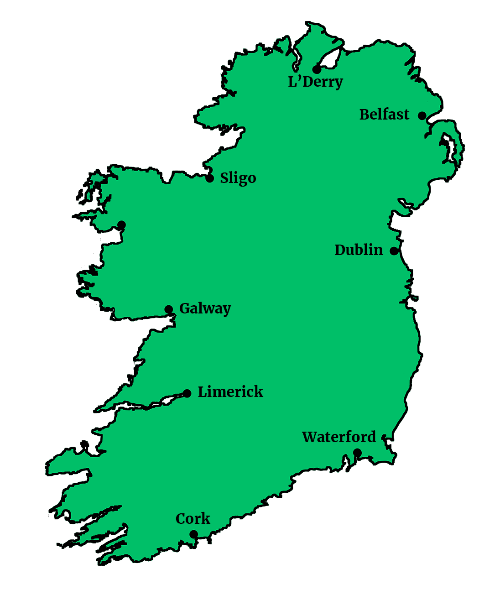

Irish Wrecks Online
A diving guide to ship wrecks around Ireland
Search the map for shipwrecks by location
Conditions of use
The information contained within this award winning Web Site is specifically designed as a guide for recreational divers and is totally free. It is as accurate as possible at the time of publication, but should not be construed as an invitation to dive any particular wreck.
If you undertake to dive any wreck(s) it is assumed that- (i) you are suitably trained to do so, (ii) you have permission from the owner, (iii) you will abide by the laws of wreck ownership, and those of salvage, within the country whose coastal waters the wreck resides.
No liability will be accepted for any loss, accident or subsequent prosecution resulting from the use / misuse of the information or advice contained within these
Reproduction of any part of this site in any form, other than for your own use, will result in immediate prosecution under the laws of Copyright of the country in which you reside.